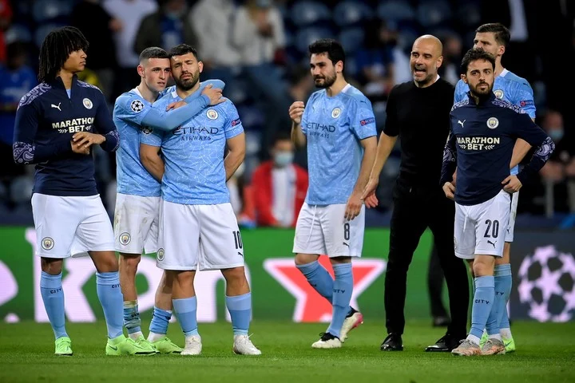

El City de Guardiola, otro año sin Champions y 1.000 millones de euros gastados en fichajes
La Champions League se le vuelve a escapar a Guardiola. Diez años después de levantar su última 'orejona', el de Santpedor ha tenido su mejor oportunidad llevando al Manchester City a la final de la competición por primera vez en su historia. Sin embargo, su 'ataque de entrenador' previo al partido, alineando un once sin mediocentro ni delantero, le pasó factura y pagó el caro precio de su atrevimiento.
Pese a que el propio Guardiola aseguró que se sentía orgulloso por que su equipo haya llegado hasta aquí, por competir "increíblemente bien en su primera final" y por su "temporada excepcional", al City hay que pedirle más. Sobre todo, después de la faraónica inversión que lleva el club para llevar la ansiada Champions a las vitrinas del club.
Unos 1.000 millones de euros en fichajes desde que Guardiola aterrizó (y más de 2.000 desde que lo hizo el jeque Mansour bin Zayed) exigen algo más que una final de Champions a cambio. Y es que tampoco se cerró el grifo la pasada temporada pese a la pandemia, con el Manchester City gastando 170 millones de euros en fichajes. Gastando, y no invirtiendo, ya que ese dinero sigue sin darles rédito en su gran objetivo.
Con el técnico catalán al frente, el Manchester City ha sacado la chequera para llevar a cabo cuatro de los cinco fichajes más caros de su historia: Ruben Dias (68 millones), Riyad Mahrez (68 millones), Joao Cancelo (65 millones) y Aymeric Laporte (65 millones).
"A cambio", Guardiola ha logrado tres Premier Leagues, una FA Cup, cuatro Copas de la Liga, dos Supercopas... pero ningún trofeo internacional. Su primer 'match ball' lo ha perdido, quizás siendo él el mayor responsable, pero su equipo, el de los 1.000 millones ha dado el primer paso para llegar a la gloria europea, competir por ella.
Sergio Agüero jugó su último partido con el Manchester City. Se va con bronca al perder la final de Champions League ante Chelsea.
Se quedó con las manos vacías. Sergio Agüero fue parte de la final de la Champions League entre Chelsea y Manchester City, pero el delantero argentino no ganó su primera Copa de Europa tras el 1-0 'blue'.
Sergio Agüero ingresó en el segundo tiempo ante el Chelsea en reemplazo del inglés Raheem Sterling. El popular 'Kun' no tuvo jugadas de peligro para inquietar el arco del cuadro londinense que fue bien defendido por el portero Édouard Mendy.
Este partido de Agüero significó su último con la camiseta del City. Hace semanas, el elenco 'ciudadano' reportó que no renovará contrato, por lo que al final del duelo ante Chelsea no evitó las lágrimas.
Para el City, esta derrota empaña una temporada en la que había ganado la Premier League y la Copa de la Liga. En la Copa de Inglaterra había sido eliminado en semifinales, precisamente por los de Stamford Bridge, lo que lo confirmó como su pesadilla de este curso.
Era la primera vez que llegaba a la final de la Champions, el torneo que obsesiona a sus propietarios emiratíes desde su llegada en 2008, pero tendrá que seguir esperando.